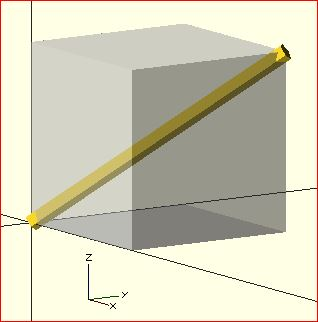

For the case of:
rotate([a, b, c]) { ... };
"a" is a rotation about the X axis, from the +Y axis, toward the +Z axis.
"b" is a rotation about the Y axis, from the +Z axis, toward the +X axis.
"c" is a rotation about the Z axis, from the +X axis, toward the +Y axis.
These are all cases of the Right Hand Rule. Point your right thumb along the positive axis, your fingers show the direction of rotation.

Thus if "a" is fixed to zero, and "b" and "c" are manipulated appropriately, this is the spherical coordinate system.
So, to construct a cylinder from the origin to some other point (x,y,z):
x= 10; y = 10; z = 10; // point coordinates of end of cylinder
length = norm([x,y,z]); // radial distance
b = acos(z/length); // inclination angle
c = atan2(y,x); // azimuthal angle
rotate([0, b, c]) cylinder(h=length, r=0.5);
%cube([x,y,z]); // corner of cube should coincide with end of cylinder

Created with the Personal Edition of HelpNDoc: Easily create Help documents